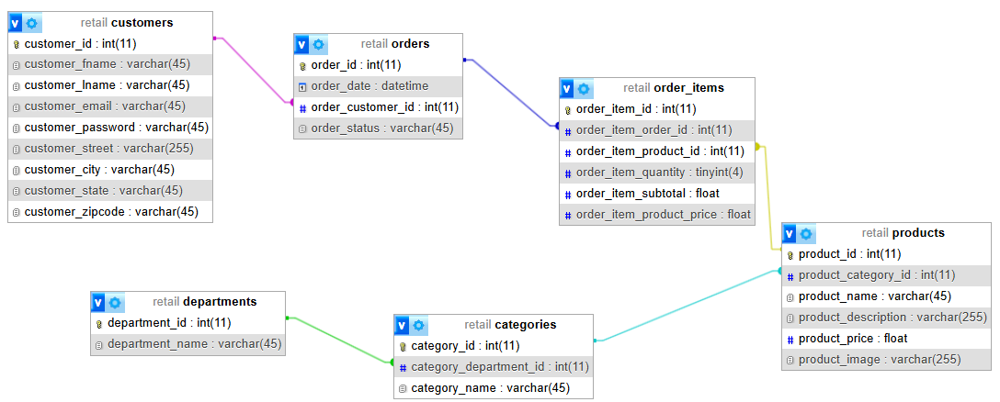

Programación en bases de datos¶
Propuesta didáctica¶
En esta UT comenzaremos a trabajar el RA5: Desarrolla procedimientos almacenados evaluando y utilizando las sentencias del lenguaje incorporado en el sistema gestor de bases de datos.
Criterios de evaluación¶
- CE5a: Se han identificado las diversas formas de automatizar tareas.
- CE5b: Se han reconocido los métodos de ejecución de guiones.
- CE5c: Se han identificado las herramientas disponibles para editar guiones.
- CE5d: Se han definido y utilizado guiones para automatizar tareas.
- CE5e: Se ha hecho uso de las funciones proporcionadas por el sistema gestor.
- CE5f: Se han definido procedimientos y funciones de usuario.
- CE5g: Se han utilizado estructuras de control de flujo.
Contenidos¶
Programación de bases de datos:
- Introducción. Lenguaje de programación.
- Variables del sistema y variables de usuario.
- Funciones.
- Estructuras de control de flujo.
- Procedimientos almacenados. Funciones de usuario.
Cuestionario inicial
- ¿Qué técnicas conoces para automatizar tareas en bases de datos relacionales?
- ¿Qué tipo de instrucciones puede contener un guion (script)?
- ¿Cómo puedo ejecutar un script en MariaDB?
- ¿En qué consiste PL/SQL?
- ¿Qué es un procedimiento almacenado? ¿En qué se diferencia de una función?
- En MariaDB, ¿para qué utilizamos el comando
DELIMITER? - ¿Qué tipos de parámetros puede tener un procedimiento?
- ¿Cuál es la estructura de un procedimiento almacenado?
- ¿Qué sucede si no le pasamos ningún argumento a un procedimiento que espera algún parámetro?
- ¿Un procedimiento puede invocar a otro procedimiento?
- ¿Cómo se define una variable dentro de un procedimiento?
- ¿Qué instrucciones condicionales existen en PL/SQL?
- ¿Qué instrucciones para realizar bucles existen en PL/SQL?
- Si el cuerpo del bucle se debe ejecutar al menos una vez, ¿qué bucle sería más apropiado?
- ¿Una función puede devolver más de un valor?
- ¿Cómo puedo averiguar las funciones existentes?
Programación de Aula (10h)¶
Esta unidad es la décima, impartiéndose a finales de la segunda evaluación, a finales de febrero, con una duración estimada de 10 sesiones lectivas:
| Sesión | Contenidos | Actividades | Criterios trabajados |
|---|---|---|---|
| 1 | Automatización de tareas | AC1001 | CE5a, CE5b, CE5c, CE5d, CE5e |
| 2 | Lenguajes de programación en bases de datos | ||
| 3 | Procedimientos | AC1002 | CE5f |
| 4 | Tipos de parámetros y variables | AC1003 | CE5f |
| 5 | Estructuras de control: condicionales | ||
| 6 | Supuesto condicionales | AC1005 | CE5f, CE5g |
| 7 | Estructuras de control: bucles | ||
| 8 | Supuesto bucles | AC1006 | CE5f, CE5g |
| 9 | Funciones | AC1009 | CE5f, CE5g |
| 10 | Supuesto funciones | AC1010 | CE5f, CE5g |
Automatización de tareas¶
La automatización de tareas en bases de datos relacionales es un aspecto fundamental para optimizar la gestión de la información, reducir errores humanos y mejorar el rendimiento del sistema. Existen diversas estrategias para automatizar procesos, desde mecanismos integrados en los sistemas gestores de bases de datos (SGBD) hasta herramientas externas que permiten programar y ejecutar acciones de manera periódica o en respuesta a eventos específicos.
Entre las principales técnicas se encuentran el uso de triggers, que permiten ejecutar acciones automáticamente ante eventos como inserciones, modificaciones o eliminaciones de datos; los procedimientos almacenados, que encapsulan conjuntos de instrucciones SQL reutilizables; y los event schedulers o jobs, que permiten programar tareas como copias de seguridad, optimización de índices o limpieza de registros antiguos.
Además de las funcionalidades propias de los SGBD, la automatización puede lograrse mediante scripts externos escritos en lenguajes como Bash, Python o PowerShell, los cuales interactúan con la base de datos a través de conectores específicos.
Bases de datos y Programación
Aunque en el módulo de Programación trabajaréis el acceso a las bases de datos desde un lenguaje de programación como Java, existen diversas formas de acceder a los datos almacenados, tales como herramientas ETL como Pentaho o AWS Glue, o herramientas de visualización como Grafana o PowerBI, que permiten realizar operaciones sobre los datos sin necesidad de, bien saber SQL, o tener la necesidad de programar un conjunto de acciones.
La elección del método de automatización dependerá de factores como la frecuencia de ejecución, la complejidad de la tarea y la infraestructura tecnológica disponible, garantizando así una administración eficiente y segura de los datos.
Guiones¶
En el contexto de bases de datos, un guion (o script) es un conjunto de instrucciones escritas en un lenguaje específico, como SQL, que se ejecutan de manera secuencial para realizar una tarea determinada. Estos guiones pueden contener comandos para crear, modificar o consultar datos (tanto sentencias DDL, DML, DCL como TCL), así como instrucciones de control de flujo que permiten automatizar procesos dentro del SGBD.
Podemos ejecutar un guion de diversas formas:
- manualmente, desde una consola o interfaz gráfica,
- o automáticamente, mediante herramientas de programación de tareas como cron jobs o herramientas de orquestación de procesos como Airflow. Su uso es esencial en la administración de bases de datos, ya que permite reproducir procesos de manera consistente, reducir errores humanos y optimizar el tiempo de ejecución de tareas repetitivas.
Uno de los métodos más comunes es la ejecución directa desde líneas de comandos, tal como vimos en el apartado Ejecutando un script:
mariadb -u usuario -p nombre_de_base_de_datos < archivo.sql
O desde dentro del propio gestor mediante source:
source archivo.sql
Además de preparar scripts con un conjunto de instrucciones, para poder crear bloques de instrucciones que encapsulen un conjunto de operaciones, necesitamos de un lenguaje de programación que permita la creación de estos módulos, así como del soporte para la programación estructurada, mediante instrucciones condicionales y de repetición.
Lenguajes de programación¶
PL/SQL (Procedural Language/Structured Query Language) es un lenguaje procedimental que extiende SQL, permitiendo una programación más avanzada y flexible en bases de datos, mediante la creación de pequeños guiones para automatizar tareas.
Existen diferentes variantes de PL/SQL que dependen del SGBD utilizado, como Oracle PL/SQL, PostgreSQL PL/pgSQL o MariaDB PL/SQL. Este lenguaje permite programar e interactuar con la base de datos mediante SQL, facilitando la manipulación de diferentes tipos de datos. Además, PL/SQL permite invocar funciones y procedimientos almacenados, lo que mejora la modularidad y reutilización del código.
Una de las características más destacadas de PL/SQL es su capacidad para manejar errores de manera efectiva, proporcionando mecanismos robustos para capturar y gestionar excepciones, lo que contribuye a la creación de aplicaciones de bases de datos más fiables y manejables.
Sus usos son:
- Facilita las tareas administrativas (copias de seguridad, control de usuarios, etc…)
- Validación y verificación de usuarios
- Consultas muy avanzadas
- Centralizar operaciones de negocio/datos.
- Seguridad: por ejemplo, sólo los procedimientos son los que modifican los datos
Todo bloque PL/SQL se va a englobar dentro de un bloque BEGIN - END, pudiendo anteponer
una declaración de elementos y variables, así como realizar una gestión de excepciones dentro del bloque de
código:
[ DECLARE -- declaraciones ]
BEGIN
-- sentencias ejecutables
[ EXCEPTION -- tratamiento de excepciones ]
END;
Procedimientos¶
Un procedimiento almacenado (Stored Procedure) es un fragmento de código que vamos a poder reutilizar. Es como si a un bloque de código le pusiéramos un nombre para poder invocarlo conforme necesitemos.
Aunque veremos las funciones más adelante, su principal diferencia es que un procedimiento no devuelve datos, mientas que una función sí. Dicho esto, podemos pasarle parámetros de salida que van a permitir al procedimiento devolver información. Y esta es una de las principales ventajas de los procedimientos almacenados respecto a, por ejemplo, una vista, y es el hecho de poder recibir parámetros para darle comportamiento específico a partir de uno o más datos de entrada.
Definiendo¶
Para definir un procedimiento realizaremos un CREATE PROCEDURE con la siguiente
sintaxis:
CREATE [OR REPLACE] PROCEDURE nombre (parámetros)
BEGIN
-- cuerpo
END
parámetros:
[ IN | OUT | INOUT ] nombreParametro tipo
Y sustituyendo parámetros por un listado de parámetros, indicando si son de entrada, salida o
entrada/salida, así como su nombre y tipo mediante [ IN | OUT | INOUT ] nombreParametro tipo.
Los tipos de los parámetros y las variables declaradas
en los bloques son los mismos empleados en el DDL, por ejemplo, INT, VARCHAR,
etc...
Cambiando el delimitador
Antes de crear nuestro primer procedimiento, necesitamos indicarle al cliente de MariaDB que no interprete los punto y coma como separador de instrucciones, ya que como nuestro bloque va a contener varias instrucciones, si no lo cambiamos, sólo ejecutaría la primera y finalizaría el procedimiento.
Para ello, antes y después de la declaración, hay que indicar el delimitador mediante DELIMITER.
Como convención vamos a utilizar la doble barra (//), y por lo tanto, tras el
END, pondremos siempre el nuevo delimitador. A continuación, volveremos a dejar el
delimitador como estaba inicialmente para poder realizar otras operaciones, como invocar al propio
procedimiento.
DELIMITER //
CREATE PROCEDURE cantidadEmpleados()
BEGIN
SELECT count(*) FROM empleado;
END
//
DELIMITER ;
Una buena práctica es comentar el objetivo del procedimiento, mediante la sentencia COMMENT:
DELIMITER //
CREATE PROCEDURE cantidadDepartamentos()
COMMENT "Recupera la cantidad de departamentos"
BEGIN
SELECT count(*) FROM departamentos;
END
//
DELIMITER ;
Invocando¶
Una vez hemos declarado un procedimiento, lo invocaremos mediante CALL mediante la sintaxis
CALL nombreProcedimiento(parámetros). La sentencia CALL es específica de
MariaDB, MySQL y PostgreSQL, ya que tanto SQL Server como
Oracle utilizan EXEC.
Así pues, para invocar al procedimiento anterior usaremos:
CALL cantidadEmpleados();
-- +----------+
-- | count(*) |
-- +----------+
-- | 10 |
-- +----------+
-- 1 row in set (0.003 sec)
Si queremos consultar los procedimientos existentes y obtener tanto su nombre, creador, fecha de creación,
... podemos emplear el comando SHOW PROCEDURE STATUS
Si queremos restringir a una base de datos en concreto, filtraremos mediante db:
SHOW PROCEDURE STATUS where db='empresa';
-- +---------+-----------------------+-----------+---------------+---------------------+---------------------+---------------+---------------------------------------+- ... -+
-- | Db | Name | Type | Definer | Modified | Created | Security_type | Comment | ... |
-- +---------+-----------------------+-----------+---------------+---------------------+---------------------+---------------+---------------------------------------+- ... -+
-- | empresa | cantidadDepartamentos | PROCEDURE | s8a@localhost | 2025-02-14 11:00:59 | 2025-02-14 11:00:59 | DEFINER | Recupera la cantidad de departamentos | ... |
-- | empresa | cantidadEmpleados | PROCEDURE | s8a@localhost | 2025-02-14 10:55:11 | 2025-02-14 10:55:11 | DEFINER | | ... |
-- +---------+-----------------------+-----------+---------------+---------------------+---------------------+---------------+---------------------------------------+- ... -+
-- 2 rows in set (0.001 sec)
Gestión de procedimientos
Los procedimientos no se pueden modificar.
Pese a que existe una instrucción ALTER PROCEDURE que permite cambiar
sus características (temas de seguridad, comentarios, etc...), no permite cambiar ni la cantidad ni el
tipo de los parámetros, ni el propio cuerpo del procedimiento. Para ello, primero deberemos eliminarlo
mediante DROP PROCEDURE:
DROP PROCEDURE cantidadEmpleados;
A posteriori, volver a crearlo. Durante el desarrollo, es muy común la sentencia
CREATE OR REPLACE PROCEDURE para evitar tener que borrarlo antes de volver a crearlo.
Finalmente, si queremos comprobar el código fuente de un procedimiento ya creado, podemos emplear SHOW CREATE PROCEDURE
Tipos de parámetros¶
Tal como hemos comentado antes, los procedimientos pueden tener diferentes tipos de parámetros:
-
Parámetros de entrada (
IN): son los parámetros por defecto, de manera que si, no indicamos el tipo, siempre serán de entrada.CREATE PROCEDURE entrada(p1 INT) … CALL entrada(5);Por ejemplo, en el siguiente caso realizamos una consulta a partir de un parámetro de entrada:
DELIMITER // CREATE PROCEDURE saluda(nombre VARCHAR(128)) BEGIN SELECT concat("Hola ", nombre); END; // DELIMITER ; call saluda("Aitor"); -
Parámetros de salida (
OUT)CREATE PROCEDURE salida(IN cantidad INT, OUT total INT) …Para pasar un parámetro de salida, se antepone una @ a su nombre
CALL salida(7, @resultado);En este caso, creamos un procedimiento que recibe un parámetro de entrada, y a partir de él, cambia el contenido del parámetro de salida, empleando la instrucción
SET variable = valor:DELIMITER // CREATE PROCEDURE saludaOut(nombre VARCHAR(128), OUT saludo VARCHAR(128)) BEGIN SET saludo = concat("Hola ", nombre); END; // DELIMITER ; -
Parámetros de entrada/salida (
INOUT): Se lee como dato de entrada, y desde el procedimiento se le asigna un resultado como salida. No todos los SGBD soportan este tipo de parámetros, así que si no usas MariaDB/MySQL es mejor consultar la documentación oficial antes de utilizarlo.CREATE PROCEDURE contar(INOUT cuenta INT(4), IN incremento INT(4)) … CALL contar(@cantidad, 5);
Por ejemplo, sobre la base de datos empresa, podemos recuperar los empleados de un determinado
departamento:
delimiter //
create procedure empleadosDepartamento(IN codigoDepartamento CHAR(5))
comment "Recupera los empleados de un determinado departamento"
begin
select * from empleado where CodDep = codigoDepartamento;
end;
//
delimiter ;
call empleadosDepartamento("VENZS");
-- +--------+--------+----------+------------+------------+-----------+-----------------------+-------+------------+
-- | CodEmp | CodDep | ExTelEmp | FecInEmp | FecNaEmp | NifEmp | NomEmp | NumHi | SalEmp |
-- +--------+--------+----------+------------+------------+-----------+-----------------------+-------+------------+
-- | 3 | VENZS | 2133 | 1984-06-08 | 1965-12-07 | 23823930D | Monforte Cid, Roldán | 1 | 5200000.00 |
-- | 4 | VENZS | 3838 | 1990-08-09 | 1975-02-21 | 38293923L | Topaz Illán, Carlos | 0 | 3200000.00 |
-- +--------+--------+----------+------------+------------+-----------+-----------------------+-------+------------+
-- 2 rows in set (0.001 sec)
¿Qué sucede si no le pasamos ningún parámetro al procedimiento? Qué obtendremos un error de que el número de argumentos no es correcto, ya que esperaba un parámetro y no le hemos pasado ninguno.
call empleadosDepartamento();
-- ERROR 1318 (42000): Incorrect number of arguments for PROCEDURE empresa.empleadosDepartamento; expected 1, got 0
¿Y si le pasamos NULL? En este caso, el procedimiento se ejecuta, pero no devuelve ningún
valor, ya que al hacer el WHERE, no se cumple la condición:
call empleadosDepartamento(NULL);
-- Empty set (0.000 sec)
-- Query OK, 0 rows affected (0.000 sec)
Si modificamos nuestro procedimiento para que gestione los nulos haciendo uso de COALESCE, podemos hacer que si recibe un
parámetro filtre por dicho valor, y en cambio, si recibe NULL muestre todos los datos:
delimiter //
create or replace procedure empleadosDepartamento(IN codigoDepartamento CHAR(5))
comment "Recupera los empleados de un determinado departamento"
begin
select * from empleado where CodDep = COALESCE(codigoDepartamento, CodDep);
end;
//
delimiter ;
call empleadosDepartamento("VENZS");
-- +--------+--------+----------+------------+------------+-----------+-----------------------+-------+------------+
-- | CodEmp | CodDep | ExTelEmp | FecInEmp | FecNaEmp | NifEmp | NomEmp | NumHi | SalEmp |
-- +--------+--------+----------+------------+------------+-----------+-----------------------+-------+------------+
-- | 3 | VENZS | 2133 | 1984-06-08 | 1965-12-07 | 23823930D | Monforte Cid, Roldán | 1 | 5200000.00 |
-- | 4 | VENZS | 3838 | 1990-08-09 | 1975-02-21 | 38293923L | Topaz Illán, Carlos | 0 | 3200000.00 |
-- +--------+--------+----------+------------+------------+-----------+-----------------------+-------+------------+
-- 2 rows in set (0.001 sec)
call empleadosDepartamento(NULL);
-- +--------+--------+----------+------------+------------+-----------+-----------------------------+-------+------------+
-- | CodEmp | CodDep | ExTelEmp | FecInEmp | FecNaEmp | NifEmp | NomEmp | NumHi | SalEmp |
-- +--------+--------+----------+------------+------------+-----------+-----------------------------+-------+------------+
-- | 1 | DIRGE | 1111 | 1972-07-01 | 1961-08-07 | 21451451V | Saladino Mandamás, Augusto | 1 | 7200000.00 |
-- | 2 | IN&DI | 2233 | 1991-06-14 | 1970-06-08 | 21231347K | Manrique Bacterio, Luisa | 0 | 4500000.00 |
-- | 3 | VENZS | 2133 | 1984-06-08 | 1965-12-07 | 23823930D | Monforte Cid, Roldán | 1 | 5200000.00 |
-- | 4 | VENZS | 3838 | 1990-08-09 | 1975-02-21 | 38293923L | Topaz Illán, Carlos | 0 | 3200000.00 |
-- | 5 | ADMZS | 1239 | 1976-08-07 | 1958-03-08 | 38223923T | Alada Veraz, Juana | 1 | 6200000.00 |
-- | 6 | JEFZS | 23838 | 1991-08-01 | 1969-06-03 | 26454122D | Gozque Altanero, Cándido | 1 | 5000000.00 |
-- | 7 | PROZS | NULL | 1994-06-30 | 1975-08-07 | 47123132D | Forzado López, Galeote | 0 | 1600000.00 |
-- | 8 | PROZS | NULL | 1994-08-15 | 1976-06-15 | 32132154H | Mascullas Alto, Eloísa | 1 | 1600000.00 |
-- | 9 | PROZS | 12124 | 1982-06-10 | 1968-07-19 | 11312121D | Mando Correa, Rosa | 2 | 3100000.00 |
-- | 10 | PROZS | NULL | 1993-11-02 | 1975-01-07 | 32939393D | Mosc Amuerta, Mario | 0 | 1300000.00 |
-- +--------+--------+----------+------------+------------+-----------+-----------------------------+-------+------------+
-- 10 rows in set (0.000 sec)
Uso de variables¶
Dentro de nuestros bloques de código, podemos declarar y utilizar variables, las cuales se consideran
locales al bloque. Éstas se declaran tras abrir un bloque mediante DECLARE variable tipo.
Para asignar un valor a una variable o parámetros usaremos SET variable = valor.
Si retomamos el ejemplo anterior, ahora definimos una variable de entrada/salida, además de otra de entrada y una tercera de salida, y utilizaremos una variable para almacenar una operación intermedia:
delimiter //
create procedure saludaInOut(INOUT nombre VARCHAR(128),
IN apellido VARCHAR(128),
OUT saludo VARCHAR(128))
begin
DECLARE nombreCompleto varchar(256);
SET nombreCompleto = concat(nombre, " ", apellido);
SET nombre = nombreCompleto;
SET saludo = concat("hola ", nombreCompleto);
end;
//
delimiter ;
A la hora de declarar una variable, también podemos asignar un valor por defecto mediante
DEFAULT:
DECLARE saldo int DEFAULT 0;
Si queremos utilizar variables de usuario
que existen durante la sesión del mismo usuario, y las cuales se pueden compartir entre varias consultas y
procedimientos almacenados, le antepondremos la arroba, por ejemplo @variableUsuario.
Así pues, para invocar al procedimiento, primero le asignamos un valor a la variable de usuario
@nombre, la cual se utilizará como parámetro de entrada y salida y, además, al invocar a
saludaInOut, le pasamos otra variable de usuario para almacenar el resultado del parámetro de
salida out:
set @nombre = "Aitor";
call saludaInOut(@nombre, "Medrano", @saludo);
select @nombre, @saludo;
Si volvemos a nuestra base de datos de empresa podemos contar cuantos empleados tiene un
departamento, pero devolviendo el resultado en un parámetro de salida:
delimiter //
create procedure cantidadEmpleadosDepartamento(IN codigoDepartamento CHAR(5),
OUT total INT)
comment "Recupera los empleados de un determinado departamento"
begin
SET total = (select count(*) from empleado where CodDep = codigoDepartamento);
end;
//
delimiter ;
call cantidadEmpleadosDepartamento("VENZS", @cantidad);
select @cantidad;
-- +-----------+
-- | @cantidad |
-- +-----------+
-- | 2 |
-- +-----------+
-- 1 row in set (0.000 sec)
Variables en consultas¶
Si queremos almacenar el resultado de una consulta en variables, es mejor hacer uso de la sentencia SELECT INTO.
Si reescribimos la consulta anterior, tendríamos:
delimiter //
create procedure cantidadEmpleadosDepartamentoSI(IN codigoDepartamento CHAR(5),
OUT total INT)
comment "Recupera los empleados de un determinado departamento"
begin
SELECT count(*) INTO total from empleado where CodDep = codigoDepartamento;
end;
//
delimiter ;
call cantidadEmpleadosDepartamentoSI("VENZS", @cantidad);
select @cantidad;
-- +-----------+
-- | @cantidad |
-- +-----------+
-- | 2 |
-- +-----------+
-- 1 row in set (0.000 sec)
Por supuesto, podemos utilizarla dentro de un procedimiento con variables locales, o fuera con variables de usuario:
select max(SalEmp), min(SalEmp) into @mayor, @menor
from empleado;
Consideraciones¶
A la hora de diseñar y programar procedimientos almacenados, debes tener en cuenta una serie de consideraciones:
- Un procedimiento almacenado puede invocar a otros procedimientos, incluso pasando variables de uno a otro en ambos sentidos. El problema viene de abusar de esta posibilidad lo que lleva a un mantenimiento a nivel de código bastante costoso.
- Es recomendable seguir algún tipo de convención de código a la hora de nombrar tanto los procedimientos
como las funciones, así como los parámetros (algunos autores anteponen
_delante de los parámetros para diferenciarlos de las variables). - Si nuestros procedimientos utilizan parámetros, hemos de asegurarnos que los tipos de datos de los parámetros concuerdan con los tipos de las columnas que van a evaluar.
- Igualmente, si definimos variables, sus tipos deben ser semejantes a los parámetros y a los campos que van a evaluar.
- Como los procedimientos, normalmente, van a contener diversas consultas y el código de puede complicar, es muy recomendable incluir comentarios claros y descriptivos que faciliten su comprensión y mantenimiento.
Estructuras de control¶
Para cambiar el flujo de un procedimiento y añadir lógica, haremos uso de instrucciones condicionales.
Condicionales¶
ELSEIF
Mientras que en SQL Server la palabra clave ELSEIF se representa de forma separada
con ELSE IF, en Oracle y PostgreSQL se hace con ELSIF.
La instrucción más básica es IF-THEN-ELSE, la cual
podemos anidar en diferentes niveles.
IF condicion THEN sentencia
[ELSEIF condicion THEN sentencia] ...
[ELSE sentencia]
END IF
Por ejemplo, podemos crear un procedimiento que categorice a las personas en diferentes rangos de edad:
delimiter //
create procedure categoriaEdad (edad integer)
begin
declare resultado varchar(128);
IF edad < 18 THEN
set resultado = "junior";
ELSEIF edad < 45 THEN
set resultado = "senior";
ELSE
set resultado = "veterano";
END IF;
select resultado;
end;
//
delimiter ;
call categoriaEdad(33);
Otra posibilidad es utilizar la instrucción CASE que permite tanto comparar valores
como expresiones:
-
Comparando valores:
CASE condicionQueTomaValor WHEN valor THEN sentencia [WHEN valor THEN sentencia] ... [ELSE sentencia] END CASE -
Comparando expresiones
CASE WHEN condicionEvaluada THEN sentencia [WHEN condicionEvaluada THEN sentencia] ... [ELSE sentencia] END CASE
Veamos como podemos resolver el ejemplo anterior haciendo uso de las dos posibilidades que ofrece
CASE:
-
Comparando valores
DELIMITER // CREATE PROCEDURE categoriaEdadCaseValor(edad integer) BEGIN declare resultado varchar(128); CASE edad WHEN 17 THEN set resultado = "junior"; WHEN 18 THEN set resultado = "junior"; WHEN 19 THEN set resultado = "senior"; ELSE set resultado = "desconocido"; END CASE; SELECT resultado; END; // DELIMITER ; call categoriaEdadCaseValor(33); -
Comparando condiciones
DELIMITER // CREATE PROCEDURE categoriaEdadCase(edad integer) BEGIN declare resultado varchar(128); CASE WHEN edad < 18 THEN set resultado = "junior"; WHEN edad < 45 THEN set resultado = "senior"; ELSE set resultado = "veterano"; END CASE; SELECT resultado; END; // DELIMITER ; call categoriaEdadCase(33);
Bucles¶
Además de sentencias condicionales, podemos utilizar instrucciones repetitivas (bucles)
Mediante WHILE ejecutaremos un fragmento
mientras se cumpla una determinada condición:
WHILE condicion DO
sentencias
END WHILE
Por ejemplo, si queremos sumar los números desde el número 1 hasta un tope, podríamos hacer:
DELIMITER //
DROP PROCEDURE IF EXISTS bucleWhile //
CREATE PROCEDURE bucleWhile(IN tope INT, OUT suma INT)
BEGIN
DECLARE contador INT;
SET contador = 1;
SET suma = 0;
WHILE contador <= tope DO
SET suma = suma + contador;
SET contador = contador + 1;
END WHILE;
END
//
DELIMITER ;
CALL bucleWhile(10, @resultado);
SELECT @resultado;
Autoevaluación
Dado el siguiente procedimiento:
CREATE TABLE t (s1 INT, PRIMARY KEY (s1));
DELIMITER //
CREATE PROCEDURE test(IN a INT, OUT b INT)
BEGIN
SET b = 0;
WHILE a > b DO
SET b = b + 1;
IF b != 2 THEN
INSERT INTO t VALUES (b);
END IF;
END WHILE;
END;
//
DELIMITER ;
CALL test(-10, @value);
SELECT @value;
CALL test(10, @value);
SELECT @value;
¿Qué valores tendría la tabla t y qué valor devuelve la sentencia SELECT value
de las líneas 18 y 21? Justifica la respuesta.
Mediante REPEAT se utiliza de forma
similar a un do-while de Java, mediante la siguiente sintaxis:
REPEAT
sentencias
UNTIL condicion
END REPEAT
Y si refactorizamos el ejemplo anterior:
DELIMITER //
DROP PROCEDURE IF EXISTS ejemploRepeat //
CREATE PROCEDURE ejemploRepeat(IN tope INT, OUT suma INT)
BEGIN
DECLARE contador INT;
SET contador = 1;
SET suma = 0;
REPEAT
SET suma = suma + contador;
SET contador = contador + 1;
UNTIL contador > tope
END REPEAT;
END
//
DELIMITER ;
CALL ejemploRepeat(10, @resultado);
SELECT @resultado;
Autoevaluación
A partir del siguiente fragmento:
DELIMITER //
CREATE OR REPLACE PROCEDURE incrementor (OUT i INT)
BEGIN
REPEAT
SET i = i + 1;
UNTIL i > 9
END REPEAT;
END;
CREATE OR REPLACE PROCEDURE test()
BEGIN
DECLARE value INT default 0;
CALL incrementor(value);
SELECT value;
END;
//
DELIMITER ;
CALL test();
-
¿Qué valor devuelve la sentencia
SELECT valuede la línea 14? ¿Por qué?0910NULL- El código entra en un bucle infinito y nunca alcanza la sentencia
SELECT value
-
¿Y si el parámetro de
incrementores de entrada? - ¿Y si es de entrada/salida?
Por último, podemos hacer un bucle mediante la combinación de las instrucciones LOOP y LEAVE, de manera que LOOP crea un
bucle infinito, el cual hay que romper con LEAVE. Para ello, definiremos una etiqueta previa a
la definición del bloque mediante la siguiente sintaxis:
etiqueta: LOOP
sentencias;
IF condicion THEN
LEAVE etiqueta;
END IF;
END LOOP
Y el ejemplo anterior ahora mediante LOOP y LEAVE:
DELIMITER //
DROP PROCEDURE IF EXISTS ejemploLoop //
CREATE PROCEDURE ejemploLoop(IN tope INT, OUT suma INT)
BEGIN
DECLARE contador INT;
SET contador = 1;
SET suma = 0;
bucle: LOOP
IF contador > tope THEN
LEAVE bucle;
END IF;
SET suma = suma + contador;
SET contador = contador + 1;
END LOOP;
END
//
DELIMITER ;
CALL ejemploLoop(10, @resultado);
SELECT @resultado;
Funciones¶
Las funciones son similares a un procedimiento, pero devuelven un único valor mediante la sentencia
RETURN. Se pueden usar en las consultas, y normalmente se utilizan para realizar cálculos o
funciones auxiliares.
Para crear una función lo haremos mediante CREATE
FUNCTION, donde en la declaración definiremos el tipo del dato a devolver, y más adelante, en el
cuerpo, haremos el RETURN de dicho valor.
La sintaxis completa es:
CREATE FUNCTION nombre (parámetros) RETURNS tipo
BEGIN
bloque con RETURN
END;
Es obligatorio que el bloque de instrucciones debe contener alguna instrucción RETURN que
devuelva el tipo esperado.
Y sustituyendo parámetros por un listado de parámetros, indicando si son de entrada, salida o
entrada/salida, así como su nombre y tipo mediante [ IN | OUT | INOUT ] nombreParametro tipo.
Por ejemplo, podemos crear una función para que, a partir de una cantidad económica, nos la devuelva con el IVA ajustado:
delimiter //
CREATE OR REPLACE FUNCTION precioConIVA(precio decimal(10,2)) RETURNS decimal(10,2)
begin
declare pIVA decimal(10,2);
set pIVA = precio * 1.21;
RETURN pIVA;
end;
//
delimiter ;
select total, precioConIVA(total) from pago;
select precioConIVA(1234);
Por supuesto, en aquello casos donde un procedimiento devolvía un único valor mediante un parámetro de salida, podemos reescribirlo mediante una función. Veamos un caso concreto donde utilizábamos un procedimiento para recuperar la cantidad de empleados de un departamento:
delimiter //
create procedure pCantidadEmpleados(IN codigoDepartamento CHAR(5),
OUT total INT)
comment "Recupera los empleados de un determinado departamento"
begin
SELECT count(*) INTO total from empleado where CodDep = codigoDepartamento;
end;
//
Pasaría a:
delimiter //
create function fCantidadEmpleados(IN codigoDepartamento CHAR(5)) RETURNS INT
comment "Recupera los empleados de un determinado departamento"
begin
declare resultado int;
SELECT count(*) INTO resultado from empleado where CodDep = codigoDepartamento;
return resultado;
end;
//
Obteniendo el mismo resultado:
delimiter ;
call cantidadEmpleadosDepartamentoSI("VENZS", @cantidad);
select @cantidad;
-- +-----------+
-- | @cantidad |
-- +-----------+
-- | 2 |
-- +-----------+
-- 1 row in set (0.000 sec)
select fCantidadEmpleados("VENZS");
-- +-----------------------------+
-- | fCantidadEmpleados("VENZS") |
-- +-----------------------------+
-- | 2 |
-- +-----------------------------+
-- 1 row in set (0.001 sec)
Gestionando funciones¶
Además de crear funciones mediante CREATE FUNCTION, otros comandos que podemos emplear son:
-
SHOW CREATE FUNCTION: permite recuperar el código fuente de la funciónshow create function fCantidadEmpleados; +--------------------+-------------------------------------------------------------------------------------------+------------------------------------------------------------------------------------------------------------------------------------------------------------------------------------------------------------------------------------------------------------------------------------------------------------------------------------+----------------------+----------------------+--------------------+ | Function | sql_mode | Create Function | character_set_client | collation_connection | Database Collation | +--------------------+-------------------------------------------------------------------------------------------+------------------------------------------------------------------------------------------------------------------------------------------------------------------------------------------------------------------------------------------------------------------------------------------------------------------------------------+----------------------+----------------------+--------------------+ | fCantidadEmpleados | STRICT_TRANS_TABLES,ERROR_FOR_DIVISION_BY_ZERO,NO_AUTO_CREATE_USER,NO_ENGINE_SUBSTITUTION | CREATE DEFINER=`s8a`@`localhost` FUNCTION `fCantidadEmpleados`(IN codigoDepartamento CHAR(5)) RETURNS int(11) COMMENT 'Recupera los empleados de un determinado departamento' begin declare resultado int; SELECT count(*) INTO resultado from empleado where CodDep = codigoDepartamento; return resultado; end | utf8mb3 | utf8mb3_general_ci | utf8mb3_general_ci | +--------------------+-------------------------------------------------------------------------------------------+------------------------------------------------------------------------------------------------------------------------------------------------------------------------------------------------------------------------------------------------------------------------------------------------------------------------------------+----------------------+----------------------+--------------------+ -
SHOW FUNCTION STATUS: información general sobre la función, como su estado, fecha de creación, juego de caracteres y colación, etc...SHOW FUNCTION STATUS like "fCantidad%"; +---------+--------------------+----------+---------------+---------------------+---------------------+---------------+-------------------------------------------------------+----------------------+----------------------+--------------------+ | Db | Name | Type | Definer | Modified | Created | Security_type | Comment | character_set_client | collation_connection | Database Collation | +---------+--------------------+----------+---------------+---------------------+---------------------+---------------+-------------------------------------------------------+----------------------+----------------------+--------------------+ | empresa | fCantidadEmpleados | FUNCTION | s8a@localhost | 2025-02-20 09:26:59 | 2025-02-20 09:26:59 | DEFINER | Recupera los empleados de un determinado departamento | utf8mb3 | utf8mb3_general_ci | utf8mb3_general_ci | +---------+--------------------+----------+---------------+---------------------+---------------------+---------------+-------------------------------------------------------+----------------------+----------------------+--------------------+ 1 row in set (0.001 sec) -
DROP FUNCTION: elimina una funciónDROP FUNCTION fCantidadEmpleados;
PL/SQL en Oracle
En MariaDB, a partir de la versión 10.3, se introdujo la compatibilidad con PL/SQL de Oracle, permitiendo a los desarrolladores escribir procedimientos almacenados y funciones con una sintaxis similar a la de Oracle PL/SQL.
Sin embargo, existen diferencias clave. Por ejemplo, en Oracle, la salida de mensajes de
depuración se realiza con DBMS_OUTPUT.PUT_LINE, mientras que en MariaDB no existe
esta funcionalidad de forma nativa y se deben emplear alternativas como SELECT,
SIGNAL o el uso de tablas temporales para almacenar mensajes de depuración.
Otra diferencia importante es el uso del atributo %TYPE, que en Oracle permite
definir variables basadas en el tipo de una columna de tabla.
Para escribir PL/SQL en MariaDB con sintaxis de Oracle, se debe habilitar el modo de
compatibilidad con sql_mode=ORACLE, lo que permite una mayor
interoperabilidad, aunque algunas funciones y paquetes no estén totalmente soportados.
Por ejemplo, ambos procedimientos son compatibles:
CREATE TABLE empleados (id INT PRIMARY KEY, nombre VARCHAR(100));
CREATE TABLE debug_log (mensaje VARCHAR(255));
DELIMITER //
CREATE PROCEDURE ejemploMariaDB()
BEGIN
DECLARE v_nombre VARCHAR(100); -- No podemos usar %TYPE en MariaDB puro
SET v_nombre = 'Aitor Medrano';
INSERT INTO debug_log (mensaje) VALUES (CONCAT('Empleado: ', v_nombre));
END;
//
DELIMITER ;
CALL ejemploMariaDB();
SELECT * FROM debug_log; -- Ver el mensaje
SET GLOBAL sql_mode='ORACLE';
CREATE TABLE empleados (id INT PRIMARY KEY, nombre VARCHAR(100));
DELIMITER //
CREATE OR REPLACE PROCEDURE ejemploOracle IS
v_nombre empleados.nombre%TYPE; -- Usa el tipo de la columna "nombre"
BEGIN
v_nombre := 'Aitor Medrano';
dbms_output.put_line('Empleado: ' || v_nombre);
END;
//
DELIMITER ;
CALL ejemploOracle();
Referencias¶
-
Sintaxis SQL oficial de PostgreSQL y MariaDB.
-
Materiales sobre el módulo de BD:
- Programació de base de dades - Institut Obert de Catalunya.
- Triggers, procedimientos y funciones en MySQL de José Juan Sánchez.
- Programación de bases de datos de Javier Gutiérrez.
- Introducción a PL/SQL de gestionbasesdatos.readthedocs.io
Actividades¶
Bases de datos empleadas
Recuerda que estas actividades se basan en las siguientes bases de datos
- DDL y DML:
bd-empresa.sql

- DDL y DML:
bd-retail.sql - Claves ajenas:
bd-retail-fk.sql

-
AC1001. (RABD.5 // CE5a, CE5b, CE5c, CE5d, CE5e // 3p) Utilizando la base de datos
empresay en un archivo nombrado comoac1001empleados.sql, se pide:- Crea una tabla
dashboard_dptoque muestre para cada departamento, además de su código y nombre y presupuesto anual, cuantos empleados y su gasto en salarios. - Crea una tabla
dashboard_centroque muestre para cada centro, además de su código y nombre, cuantos departamentos contiene y el presupuesto anual (entendido como la suma de los presupuestos de sus departamentos). - Lanza el script
ac1001empleados.sqlpara que ejecute ambas operaciones (cada vez que lo hagas, debe borrar las tablas y volver a crearlas) - Averigua cómo puedes automatizar la ejecución del script mediante
crontabpara que se ejecute cada 5 minutos.
- Crea una tabla
-
AC1002. (RABD.5 // CE5f // 3p) En la base de datos
empresa, crea:- El procedimiento
ac1002listEmpleadosConHijosque muestre los empleados que tienen hijos. - El procedimiento
ac1002contarEmpleadosque muestre la cantidad de empleados. - El procedimiento
ac1002updSalarioEmpleadosque incremente el salario de los empleados un 10%. - Recupera los procedimientos existentes.
- Elimina el procedimiento
ac1002updSalarioEmpleados.
Debes adjuntar, para cada apartado, tanto las sentencias necesarias para su creación como para su prueba y una captura de pantalla con su ejecución.
- El procedimiento
-
AC1003. (RABD.5 // CE5f // 3p) En la base de datos
empresa, crea:- El procedimiento
ac1003listDepartamentosque liste los departamentos de un determinado centro. - El procedimiento
ac1003listDepartamentosPlusque liste los departamentos de un centro, y en el caso de recibir como argumento un valor nulo, devuelva todos los departamentos. - El procedimiento
ac1003updSalarioEmpleadosParamque incremente el salario de los empleados una determinada cantidad a partir de un parámetro de entrada. - El procedimiento
ac1003contarEmpleadosque devuelva la cantidad de empleados en un parámetro de salida. - El procedimiento
ac1003contarEmpleadosDptoque devuelva la cantidad de empleados de un determinado departamento (introducido vía un parámetro de entrada) en un parámetro de salida. - El procedimiento
ac1003sueldosSetque devuelva el sueldo menor, el mayor y el promedio de todos los empleados (usandoSET). - El procedimiento
ac1003sueldosSelectIntoque devuelva el sueldo menor, el mayor y el promedio de todos los empleados (usandoSELECT INTO).
Debes adjuntar, para cada apartado, tanto las sentencias necesarias para su creación como para su prueba y una captura de pantalla con su ejecución.
- El procedimiento
- AR1004. (RABD.5 // CE5f // 3p) Realiza las actividades 1, 2 y 3 del apartado 1.8.2 sobre Procedimientos con sentencias SQL de los apuntes del docente José Juan Sánchez, adjuntando capturas de las operaciones y contestando a las preguntas que plantea.
-
AC1005. (RABD.5 // CE5f, CE5g // 3p) En la base de datos
empresa, crea:- El procedimiento
ac1005semanaIfque reciba como entrada un entero que represente un día de la semana y que devuelva una cadena con el nombre del día de la semana correspondiente (utilizandoIF). Por ejemplo, para la entrada1debería devolverLunes. - El procedimiento
ac1005semanaCaseque reciba como entrada un entero que represente un día de la semana y que devuelva una cadena con el nombre del día de la semana correspondiente (utilizandoCASE) - El procedimiento
ac1005semanaCasValque reciba como entrada un entero que represente un día de la semana y una cadena con el idioma (los posibles valores sonCASoVAL) y que devuelva una cadena con el nombre del día de la semana correspondiente en el idioma indicado (puedes utilizar las sentencias condicionales que consideres). Por ejemplo, para1yCAS, devolveráLunes, pero si esVALdevolveráDilluns.
Debes pensar y argumentar qué sucede si cualquiera de los parámetros recibidos como entrada no contienen alguno de los valores esperados.
A continuación, sobre la tabla
habilidad, crea:- El procedimiento
ac1005insertaHabilidadque reciba como entrada un código de habilidad y su descripción, y que sólo la inserte si el código de la habilidad tiene un tamaño de 5 caracteres. - El procedimiento
ac1005upsertHabilidadque reciba como entrada un código de habilidad y su descripción, y que sólo la inserte si el código de la habilidad tiene un tamaño de 5 caracteres. Si el código ya existe, debe modificar la habilidad con la nueva descripción, y si no, la insertará. - El procedimiento
ac1005upsertHabilidadPlusque además de todo lo anterior, informe al usuario de la operación realizada. En el caso de que los datos de entrada sean incorrectos o incompletos, deberá también informar de ello.
Además, no olvides adjuntar, para cada apartado, tanto las sentencias necesarias para su creación como para su prueba y una captura de pantalla con su ejecución.
- El procedimiento
-
AC1006. (RABD.5 // CE5f, CE5g // 3p) En la base de datos
empresa, crea:- El procedimiento
ac1006habilidadque reciba como entrada un código de habilidad y una descripción, y la inserte en la tablahabilidad. -
El procedimiento
ac1006habilidadesque reciba como entrada un entero con una cantidad, e inserte tantas habilidades como el parámetro recibido, asignando como códigoBD-NNNy descripciónHabilidad NNN, sustituyendoNNNpor un número entero secuencial.Si el parámetro es
3, insertará las habilidadesBD-1,BD-2yBD-3y las descripcionesHabilidad 1,Habilidad 2yHabilidad 3. -
El procedimiento
ac1006habilidadesInicioFinque reciba como entrada un entero que indique el número de inicio y otro con el tope (o fin), e inserte habilidades cuyos valores vayan desdeiniciohastafin, con la misma nomenclatura que el apartado anterior.
Debes pensar y argumentar qué sucede si cualquiera de los parámetros recibidos como entrada no contienen alguno de los valores esperados.
Además, no olvides adjuntar, para cada apartado, tanto las sentencias necesarias para su creación como para su prueba y una captura de pantalla con su ejecución.
- El procedimiento
- AR1007. (RABD.5 // CE5f, CE5g // 3p) Realiza las actividades 4, 5 y 6 del apartado 1.8.2 sobre Procedimientos con sentencias SQL de los apuntes del docente José Juan Sánchez, adjuntando capturas de las operaciones y contestando a las preguntas que plantea.
- AP1008.(RABD.5 // CE5f, CE5g // 3p) Realiza las actividades 10, 11 y 12 del apartado 1.8.2 sobre Procedimientos con sentencias SQL de los apuntes del docente José Juan Sánchez, adjuntando capturas de las operaciones y contestando a las preguntas que plantea.
-
AC1009. (RABD.5 // CE5f, CE5g // 3p) En la base de datos
empresa, crea:- Las funciones
ac1009contarEmpleadosyac1009contarEmpleadosDptoreescribiendo los procedimientosac1003contarEmpleadosyac1003contarEmpleadosDptode la actividad AC1003. - La función
ac1009presupuestoCentroque, a partir del código de un centro, devuelva su presupuesto (calculado como la suma de los presupuestos de sus departamentos). - La función
ac1009totalHabilidadesEmpleadoque, a partir de un código de un empleado, devuelva cuantas habilidades tiene. - La función
ac1009totalEmpleadosHabilidadque, a partir de un código de una habilidad, devuelva cuantos empleados la tienen. - La función
ac1009directorCentroque, a partir del código de un centro, devuelva el nombre de su director. - La función
ac1009emailEmpleadoque, a partir de un código de empleado, devuelva su email con la siguiente nomenclatura:CodEmp@CodDep.CodCen.com - La función
ac1009validaHijosEmpleadosque a partir de un código de un empleado, compruebe si la cantidad de hijos de la tablaempleadocoinciden con los de la tablahijo. - Comprueba las funciones existentes en la base de datos
empresa.
- Las funciones
-
AC1010. (RABD.5 // CE5f, CE5g // 3p) En la base de datos
pruebas, crea la tablaalumnadocon las siguientes columnas:id: entero sin signo (clave primaria).nombre: cadena de 50 caracteres.apellidos: cadena de 50 caracteres.curso: cadena de 50 caracteres;
E inserta 5 registros con datos inventados.
-
Crea una función (
crearEmail) que a partir de un nombre, apellidos y curso, genere una dirección de email y la devuelva como salida. El formato del email de salida es el siguiente:- El primer carácter del parámetro nombre (en minúsculas).
- Los cinco primeros caracteres del parámetro apellidos (en minúsculas).
- Un número con la longitud de los apellidos.
- El carácter
@. - El curso pasado como parámetro (en minúsculas).
- y finalizar con
.s8a.es.
Por ejemplo, si invocamos a la función con
crearEmail('Aitor', 'Medrano', 'BD')devolveríaamedra7@bd.s8a.es. -
Añade una columna
emaila la tablaalumnado. A continuación, crea un procedimiento (ac1010actualizarColumnaEmail) que permita crear un email para todo el alumnado que ya existe en la tablaalumnado, utilizando la funcióncrearEmail.
- AR1011. (RABD.5 // CE5f, CE5g // 3p) Realiza las actividades del apartado 1.8.4 sobre Funciones con sentencias SQL de los apuntes del docente José Juan Sánchez, adjuntando capturas de las operaciones y contestando a las preguntas que plantea.
- AR1012. (RABD.5 // CE5a, CE5b, CE5c, CE5d, CE5e, CE5f, CE5g // 3p) Una vez finalizada la unidad, responde todas las preguntas del cuestionario inicial, con al menos un par de líneas para cada una de las cuestiones.